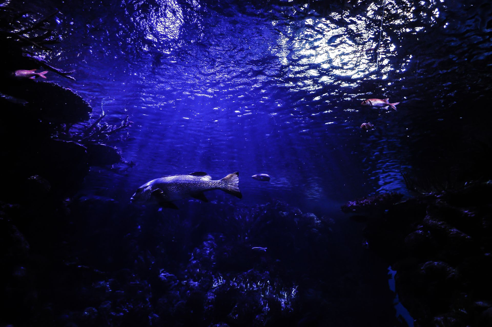

Nine dives, one map
The brief
Survey and sample a hydrothermal vent field in one season: a fixed sampling grid, thirty-eight chimney structures to map, and a ship window fixed by another programme's schedule. The grid could not move; the weather could.
The decisions
Every profile was set by the planner's arithmetic before sailing. When the working area proved deeper than the proposal assumed, two planned five-hour bottoms were cut to four hours ten — on paper, in the planning meeting, not at depth with a scientist mid-sample. Dive order was sequenced deepest-first, so the tightest margins were flown with the freshest crew.
The outcome
Grid completed a day early. Thirty-eight structures mapped, samples taken on eight of nine dives, and every dive surfaced with at least 3 h 41 min of life support above the untouched reserve. The ninth dive's sampling was traded for photomosaic work the chief scientist ranked higher — her call, inside a margin that allowed it.
“She cut two of our planned five-hour bottoms to four hours ten, on paper, before we sailed — and the field work still finished early. I have flown with pilots who treat the profile as a suggestion. Solveig treats it as the contract.”
